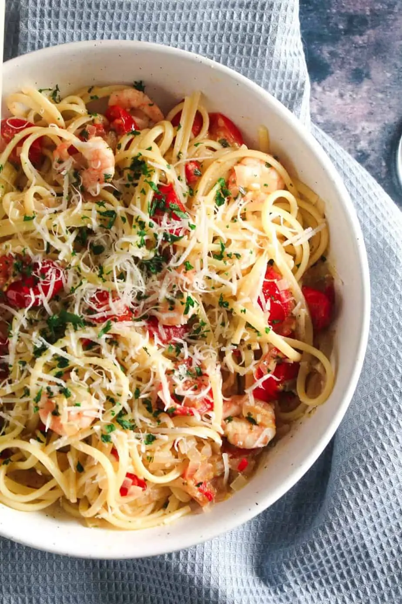

Prawn Linguini

Description
Quick and easy prawn linguini recipe with a hint of spice
This recipe serves 4
Ingredients
- 200 grams peeled King Prawns
- 180 grams linguine
- 1 shallot, diced
- 1 red chilli, deseeded and diced
- 200 grams cherry tomatoes, halved
- 2 cloves garlic, finely sliced
- 120 ml white wine
- 1 tbsp unsalted butter
- zest of 1 lemon
- 1 tbsp fresh chopped parsley
- 20 grams grated parmesan cheese
Steps
- Bring a large pot of salted water to boil for cooking the pasta.
- Add the butter to a frying pan over medium heat and, if using raw prawns, add them to the pan and cook until they just turn pink. Remove the prawns and set aside, leaving the butter in the pan.
- Add the shallot and chilli to the pan with the butter and saute. Meanwhile, put the pasta on to cook.
- When the shallot begins to soften (2-3 minutes) add the garlic and tomatoes to the pan with a pinch of salt and pepper. Stir together then pour over the wine.
- Allow the sauce to simmer for about 5 minutes until the pasta is cooked. It should be slightly al dente (use the lower cooking time recommended on the packet).
- Add the prawns into the pan with the chilli and tomato, give everything a stir and add the pasta. (I prefer to use tongs to transfer the pasta directly into the sauce. This also adds some of the pasta water which will emulsify the sauce and help it stick to the pasta. If you prefer to drain the pasta first in a colander, make sure to keep a tablespoon of the cooking water and add it to the sauce with the pasta.)
- Sprinkle over the parsley, parmesan and lemon zest and toss everything together with tongs before serving.
- Serve with an extra sprinkle of parmesan and a side of salad.